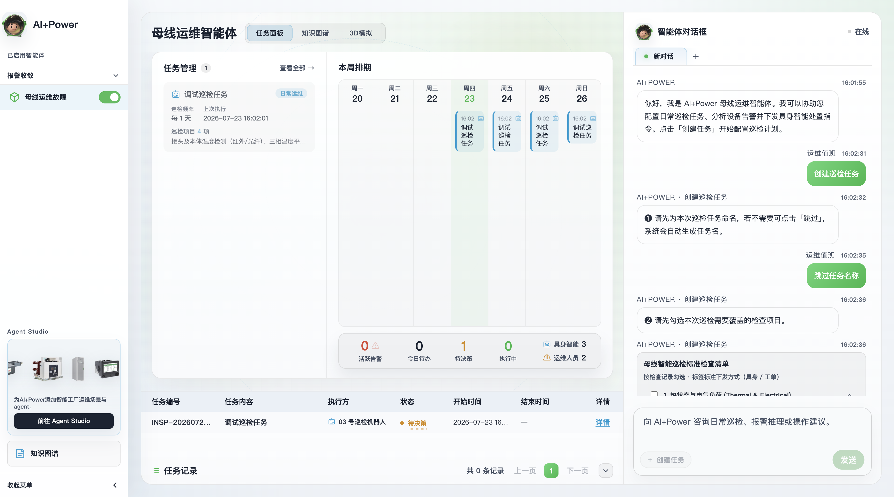
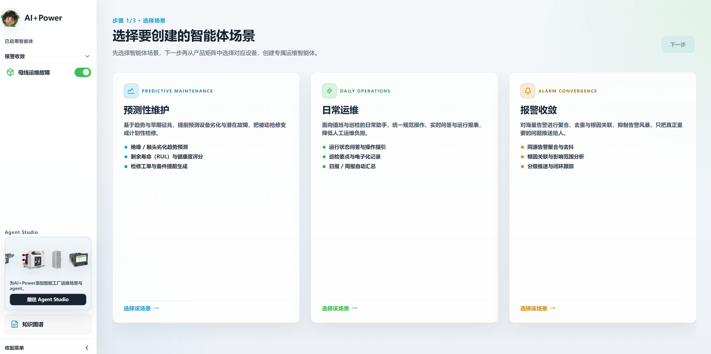
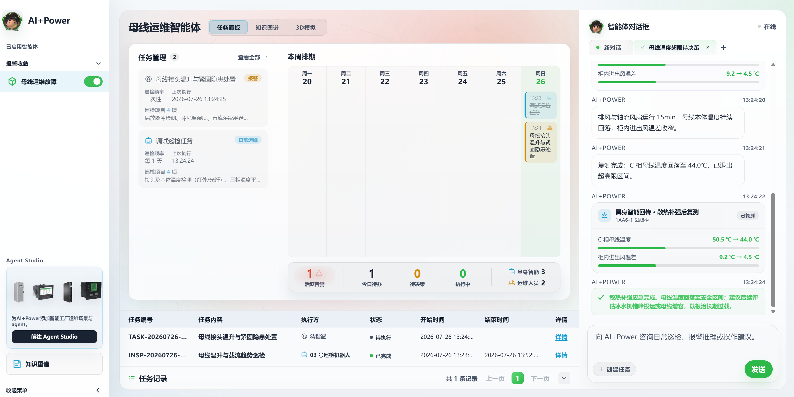
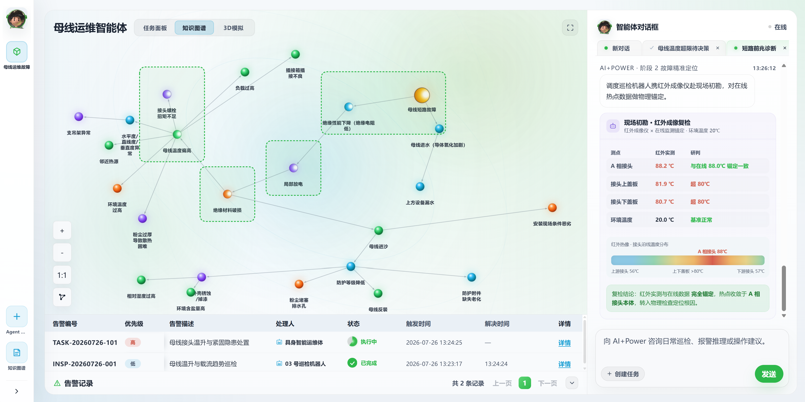
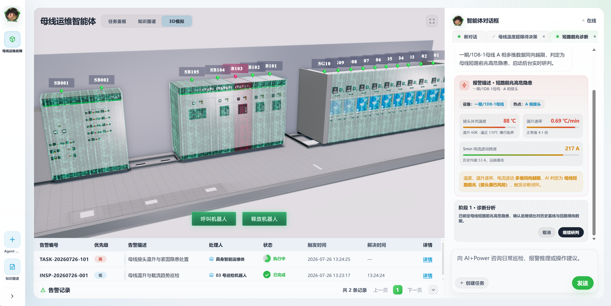
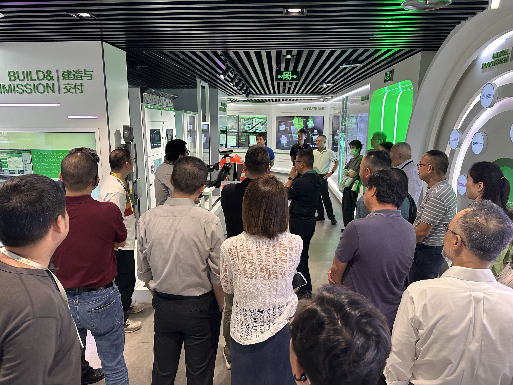
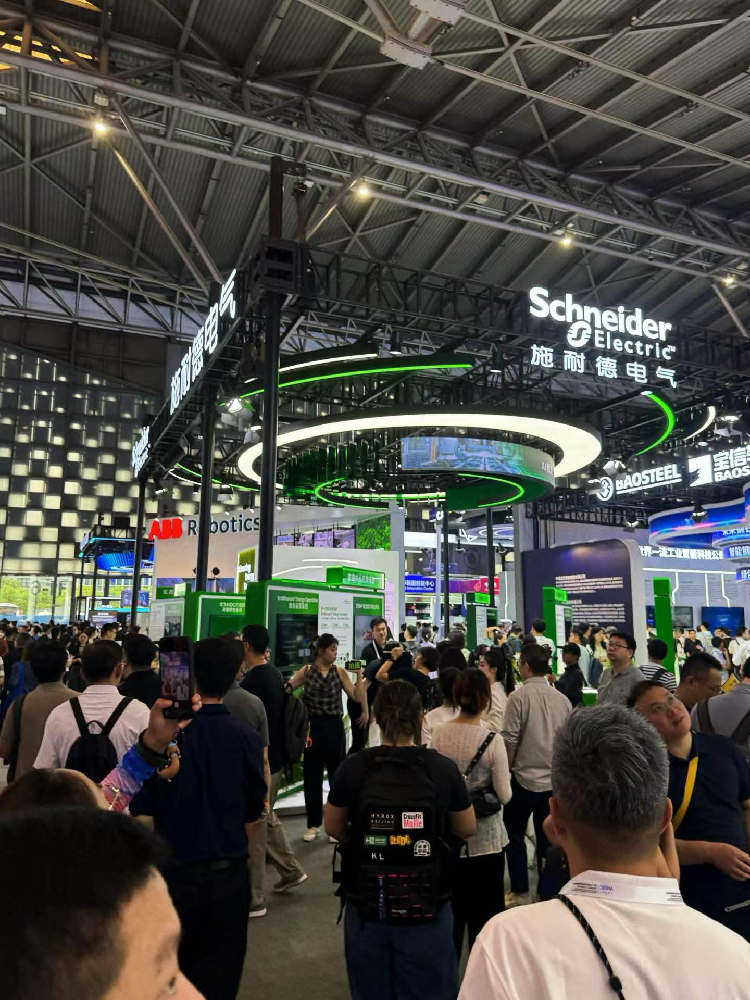

Schneider Electric: AI+Power
An agentic factory platform that pairs PowerGPT with busbar topology monitoring, risk insight, and embodied inspection workflows for industrial operations.
-
Role
AI Product Design Intern (Digital Innovation department)
-
Timeline
May 2026 - June 2026
-
Company
-
Tools
 Codex
Codex Claude Code
Claude Code Cursor
Cursor Figma
Figma
Context & problem
As the sole designer and AI product intern on this project, I was responsible for building a platform prototype from scratch: an integrated system pairing automated inspection with robot dispatch across the company's factories. A public demo date was set before the product existed, so my role centered on building out the frontend as the clearest way to make the product intent legible.
Almost all of my input was verbal, drawn from interviewing engineers, R&D colleagues, and on-duty factory workers, and from working directly alongside the team lead. Translating that unstructured domain expertise into a design driven by a product mindset was the key task. The problems identified were as follows:
-
Maintenance should be preventive, not reactive
Factory inspection runs on fixed intervals and human judgment, so early signs of degradation are easy to miss until they become failures.
-
Domain knowledge is scattered
Maintenance expertise sits in separate documents and in individual engineers' heads, never consolidated into structured, shared knowledge. Because none of it is a reusable asset, root cause diagnosis stays dependent on a few experienced people and cannot scale as equipment and data grow.
-
Readily available field response is crucial
Inspection tasks like photo capture, thermal measurement, and status confirmation all require staff on site, yet faults can occur at any hour. The gap between detecting a problem and reaching it is bounded by travel time, and it widens exactly when conditions are most hazardous.
Process & Iteration
With no UI design or product spec in place, I tried out a highly iterative, AI-native process in Cursor, testing different models against each other as their capabilities kept shifting. Building directly in code meant the prototypes were interactive and largely self-explanatory, which made cycling through feedback and revision fast.
1. Mapping the factory as a node network
My first iteration took a dashboard mindset, mapping the factory as a network of nodes representing different types of equipment. The topology is legible at a glance, while clicking on a node to inspect it or talking to the agent below offers more information on the equipment's status.

2. Surfacing agent activity with a task queue
In a second iteration, I added a task queue, giving real-time visual confirmation and history for the tasks the agent carries out as it multitasks, and docked the chat as a persistent panel instead of click-to-open to keep the agent's updates always in view.

3. Visualizing root causes & interactive checklists
I added a knowledge graph view over the node map, documenting the potential causes of equipment failure. I chose a top-down tree to illustrate cause-and-effect relationships. Agent messages now render as clickable components, such as a checklist that updates itself.

4. Optimizing space & exposing raw telemetry
I implemented the equipment node tree in a radial distribution to optimize space. Raw telemetry and the model's confidence score now print in the message dock, so a recommendation can be traced back to the readings behind it.

5. Shifting from graph-first to a task-first workflow
A major pivot came when my lead and I decided that a task-first interface was the right structure (as opposed to graph-first or chat-first), since the agent should be able to schedule tasks rather than only run them one-off or execute them immediately. The user gets an at-a-glance view of completed and upcoming tasks, and can update them efficiently.

Final UI Design

Creating a maintenance agent

Task panel and inspection schedule

Knowledge graph and alert records

3D factory simulation and robot controls
Product walkthrough
1. Creating an agent
The setup flow starts with a maintenance scenario, then narrows the agent’s scope to specific equipment. Users can link an existing knowledge graph or create a new one, connecting the agent to the structured knowledge it will use during inspections.
2. Scheduling and running an inspection task
A recurring inspection appears in the weekly schedule and runs as a tracked task. Its results bring equipment readings and analysis into the task details panel, where users can review an issue and request on-site verification when further checks are needed.
3. Responding to a triggered alert
A triggered alert opens a diagnostic conversation alongside the knowledge graph. The agent presents inspection findings, connects the issue to possible causes, and guides a graded response, with robot controls available in the 3D factory view.
Outcome & impact
AI + Power was presented across nine demos at Schneider Electric's Beijing innovation campus to an audience of more than 500, including national leadership from Schneider's China teams and representatives from partner firms. During the demo, the system was wired directly to factory equipment on the exhibition floor, where it detected a fault, raised an alert, and dispatched a robot to shut the machine down in real time. The project was later shown at the World Artificial Intelligence Conference (WAIC) in Shanghai.
The platform has since entered formal development; as a result, my internship was extended from three months into a full year, where I work alongside engineers and product designers to carry the prototype to production.

Live demo at Schneider Beijing Campus, June 24th

WAIC conference, Shanghai, July 17th